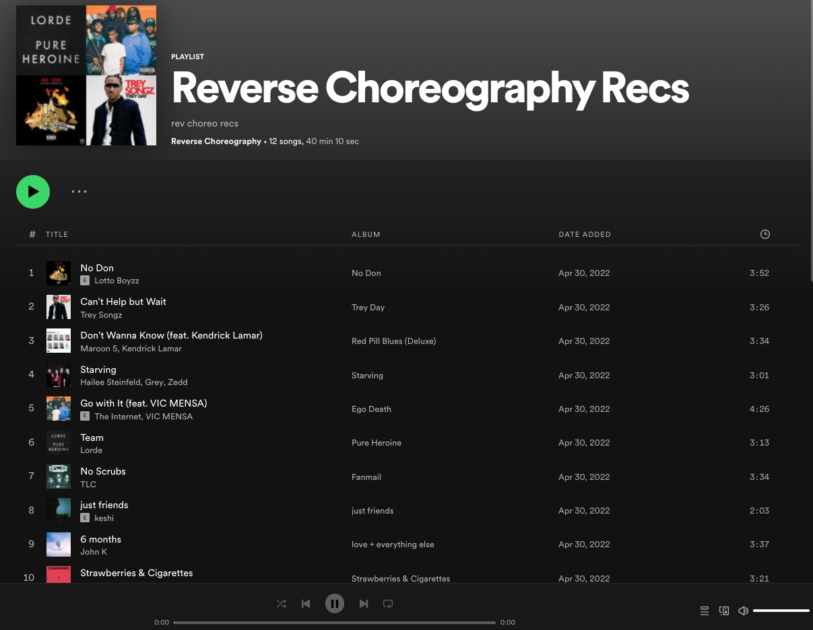
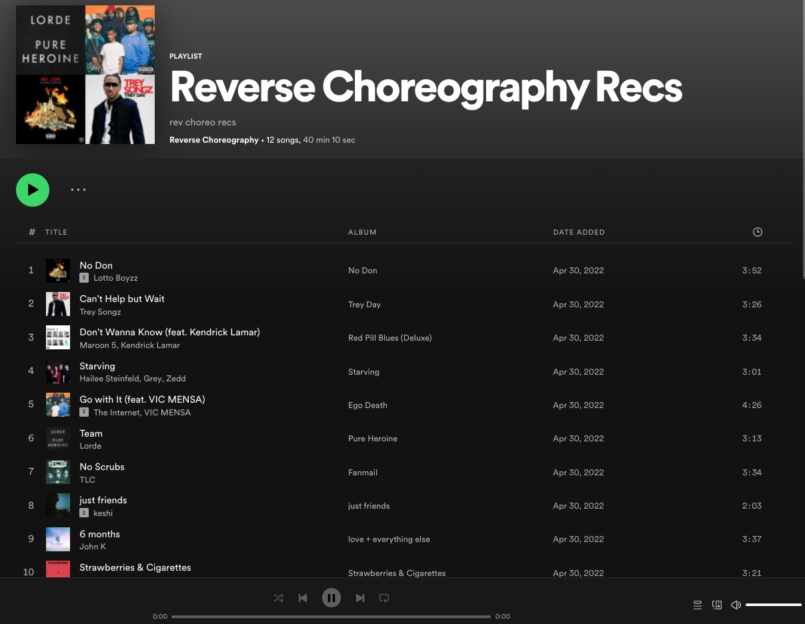

Chainfuse & KeySHA -- Software Engineer
Wanting to get more experience developing professional apps, I joined two collaborating startups - Chainfuse and KeySHA - as a full-stack engineer.
When I joined the project, it was at ground floor. As a part of the team, I added search-engine functionality, created the ability for merchants to highlight specific items, and created pages for collections, items, articles, and profiles. I also worked on calculating user-facing metrics for collections and profiles, such as floor price, total volume, and unique items.
I also created the profile page infrastructure, which integrates with Alchemy to fetch user data and links to various social media platforms for quick sharing.
Microsoft -- SWE Intern
I interned on the SQL Engineering systems team at Microsoft from May-August 2022. Hundreds of engineers contribute to SQL on a daily basis, each frequently pushing a new block of code. After a while, individual commits cause code to degrade. The team decides to start testing aggressively to validate all this potentially faulty new code. But with over 2 million tests, you can't actually run all tests on each new block of code...
You then decide to run different test batches on any new commit and eventually circle back to the same test batches so that -- over time -- you'll use the same tests again. If it was initially passing but is now failing, you now know that somewhere between those two runs -- somewhere in that range of, say, 100 commits -- one commit broke the code. You then triangulate that break and kick it out.
My job deals with extending this process to more sporadic test results.
Amazon -- SWD Intern
I previously worked on the Amazon.com Selection and Catalog Systems team, which is responsible for surfacing the millions of different products in the world to a business team that eventually onboards ideal products onto Amazon.
My job on the team was to implement a scalable serverless system that detected and repaired inconsistencies between different data sources. The end result of the project was that over 300k production-environment inconsistencies were fixed.
Frontend development included setting up a dashboard, alarm system, and ticketing system for the system's continual monitoring
Quant SC -- Co-Founder, Project Lead, Senior Adviser
As a Co-Founder of Quant SC, I dipped my toes into frontend design by setting up the club's website (integrated with airtable for newsletter record-keeping); collaborated with a design team to design the club's logo; managed semesterly project system, lead technical workshops on version control, basic programming, and trading; and helped establish a recruiting pipeline.
Here, you'll find some high-level architecture and backtesting results from one of my teams' projects from Fall 2021. At the time, we were researching how to incorporate industry-specific news sentiment into a cross-industry delayed-reaction ML-based trading strategy.
Makers -- IoT/Backend Engineer + Audio-Visual ML
Makers is an IoT/embedded systems hacky-project-type of club. I've been a part of three projects during my time there:
Dude, Where's My Bike
Have you ever had your bike stolen? I haven't, but I'm pretty sure it sucks! I worked on this project, which had a main goal of creating a bike-locating app ideal for bike-recovery as well as recommending safe locations ideal for parking bikes.
My role on the team was setting up the GPS-enabled data source, which came in the shape of a Boron Particle micro-controller.
Compost-o-Matic
Composting is the process of turning food scraps and other organic material into nutrient-rich soil that can be used to fertilize future crops. In other words, it's a great way to improve nutrient cycling in communities that don't traditionally grow crops on an industrial level (think university gardens!).
The only issue with this is that creating a healthy compost can be hard! It requires the proper moisture content and sufficient but not overly-sufficient heat. If these metrics go out-of-whack, the compost can start producing methane and won't be environmentally positive.
Compost-o-Matic aimed to improve the process of creating a healthy compost pile by creating a smart-monitoring device. Pulling experience from my previous project, Dude Where's My Bike, I set up the initial datalink between the sensor-microcontroller to a web-app dashboard reporting the sensor readings.
Reverse Choreography
Consider the situation where a choreographer wants to use a new move in a piece. They may either have to pace the move to match the music that's already been chosen or they may have to search through endless songs for some clip that matches the move.
This akin to giving a painter a warped canvas and saying to either try to make it work or look for a better one in a pile of seemingly all warped canvases.
To remedy this, a team and I worked to build a video capture-to-music recommendation pipeline that interprets body movement as the basis for suggesting potentially appropriate songs to dance to.
How good are the recommendations? Hmu and judge for yourself! (in all honesty, you'll probably be like "meh, pretty cool, but not blown away")
 

Blackbox Trading -- SWE
As a strategy developer/SWE at this student-run prop-trading startup, I was given the task of implementing a value-based investing strategy as an auto-trader.
Through this experience, I was able to not only improve as a developer, working with a new platform on time-series data, but also able to dive deep into a business-focused topic that grounded all decisions being made:
The main lesson I learned was that theory and results are both important. The graphs shown here are pulled from an auto-trader that (to my knowledge) is still being used to make trades on the market.
Prediction Health -- AI + SWE Intern
My first work experience in tech was at a healthcare tech startup called Prediction Health. Being at a startup, the number and breadth of tasks to handle was beyond what most 3-month internship or semester-long club projects will offer you. For example, I spent the first two weeks just making data intake systems responsive to more third-party data output formats... boring stuff but a good way to freshen up to basic software engineering!
My next couple weeks were potentially even less glamorous -- fixing every single test (meaning over 100 tests spanning everything from NLP processing pipelines to in-app notifications to authentication to user-input) that was failing on the backend... again, gritty work but undoubtedly a great way to learn a lot very fast
I finished off the internship working on evaluating speech-to-text providers' accuracy and creating ML models that either attempted to detect ambient noise or split up audio by speaker. This was my first foray into what is largely considered cutting-edge
Other Things
Melon Tunes
Messing around with some more audio ML, I recently started working on a project to take in audio data of someone tapping a watermelon with the end goal being a recommendation on whether or not to buy the watermelon based on predicted levels of crispness and sweetness.
The theme of a lot of my work is, thus, that I pursue sometimes trivial things without hesitation. Feel free to reach out and ask about any other projects I'm working on :)